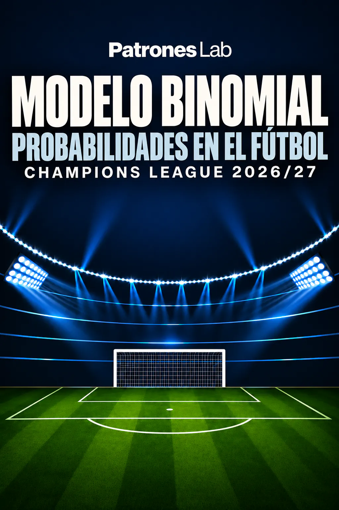

스포츠 분석 · 프로젝트 19

프로젝트 21 · 축구 분석
이항 모델 · 득점 확률
이항분포를 사용해 구단의 슛 수와 과거 득점 전환율에 따라 득점 확률이 어떻게 달라지는지 분석합니다. 가장 흔한 결과와 승리, 무승부, 패배 확률을 추정합니다. 2026/27 챔피언스리그 36개 팀의 통계에 홈 이점 계수도 반영합니다.
홈팀
구단 선택
평균 득점
홈 팀 열에서 구단 엠블럼을 선택하세요.
원정팀
구단 선택
평균 득점
원정 팀 열에서 구단 엠블럼을 선택하세요.
득점 확률
스코어 분포도
| 0 | 1 | 2 | 3 | 4 | 5 | 6 | 7+ |
|---|
결과
홈팀 승리
무승부
원정팀 승리
배경과 목표
슛 수와 평소 득점으로 이어지는 비율을 알면 팀이 넣을 골 수를 모델링할 수 있다는 생각에서 출발했습니다. 이항분포에 두 값을 적용하면 각 경기의 득점 조합과 그에 따른 결과의 확률을 구할 수 있습니다.
두 팀이 기록할 수 있는 득점 수를 조합해 홈 승리, 무승부, 원정 승리 확률을 구합니다. 각 구단의 기록에서 한 경기의 결과별 확률까지 일관된 통계 기준으로 계산하는 과정을 살펴볼 수 있습니다.
데이터 및 진단
QueroStats가 제공하는 2026/27 챔피언스리그 참가 구단의 슛과 득점 기록을 사용했습니다. 36개 팀의 경기 수와 누적 슛 수, 득점 수를 가져오고, 팀 이름과 식별자로 자료를 정리했습니다.
각 구단의 누적 슛 수를 경기 수로 나누어 경기당 슛 수를 구하고, 득점을 전체 슛 수로 나누어 득점 전환율을 구합니다. 모델은 각 팀의 이 두 통계를 사용해 확률을 계산합니다.
n\approx\frac{\text{총 슈팅 수}}{\text{경기 수}}
p=\frac{\text{총 득점}}{\text{총 슈팅 수}}
이항분포는 정해진 정수 횟수의 시도를 가정하므로 경기당 슛 수는 가장 가까운 정수로 반올림합니다. 득점 전환율은 관측된 비율을 반영하도록 백분율 소수 둘째 자리까지 유지합니다.
전체 슛 수에는 유효 슛과 빗나간 슛, 차단된 슛이 모두 포함되므로 득점 전환율도 이 전체를 기준으로 계산합니다. 반면 기대 득점(xG)은 슛 위치와 같은 개별 기회의 특성을 바탕으로 득점 확률을 부여하는 지표입니다.
데이터를 정리한 뒤에도 슛 수와 슛 효율은 별도 매개변수로 유지합니다. 둘 다 모델이 계산하는 득점 분포에 직접 영향을 줍니다.
모델과 확률 계산
득점 수의 이항분포
이항분포는 정해진 횟수만큼 시도했을 때 몇 번 성공할 수 있는지를 나타냅니다. 여기서 슛 한 번은 한 번의 시도, 골은 성공, 득점 전환율은 성공 확률입니다. n은 슛 수, p는 슛당 득점 확률, G는 득점 수입니다.
G\sim\operatorname{Binomial}(n,p)
각각의 슛이 서로 독립이며 득점 확률도 같다고 가정합니다. 이 가정 덕분에 해석하기 쉬운 두 매개변수로 가능한 모든 득점 수의 분포를 구할 수 있습니다.
정확한 득점 수의 확률과 누적 확률
정확히 k골을 넣을 확률은 n번의 슛 중 k골이 나오는 모든 조합을 고려해 구합니다. 가능한 조합 수에 선택한 슛이 골이 되고 나머지가 골이 되지 않을 확률을 반영합니다.
P(G=k)=C(n,k)\,p^k(1-p)^{n-k}
C(n,k)=\frac{n!}{k!\,(n-k)!}
계수 C(n, k)는 슛 n번에서 k골이 나올 조합 수입니다. 예를 들어 슛 10회, 전환율 10%일 때 정확히 1골을 넣을 확률은 38.74%입니다.
P(G=1)=10\cdot0{,}10\cdot0{,}90^9\approx38{,}74\%
k골 이상을 넣을 확률은 정확히 k골인 경우와 그보다 많이 넣는 모든 경우의 확률을 더한 값입니다. 같은 예에서 적어도 한 골을 넣을 확률은 65.13%입니다.
P(G\ge k)=\sum_{r=k}^{n}P(G=r)
P(G\ge1)=1-P(G=0)=1-0{,}90^{10}\approx65{,}13\%
선 그래프는 두 팀의 분포를 각각 보여 줍니다. ‘정확히’는 해당 득점 수가 나올 확률, ‘이상’은 선택한 값 이상을 기록할 누적 확률입니다. 필요한 경우 10골 이상은 10+로 묶습니다.
평균 득점, 산포와 대안인 푸아송 모델
분포에서 득점 기댓값과 분산도 구할 수 있습니다. 기댓값은 같은 조건을 여러 번 반복했을 때의 이론적 평균이며 분산은 득점 수가 그 평균 주변에서 얼마나 흩어질 수 있는지 나타냅니다.
\operatorname{E}(G)=n\,p
\operatorname{Var}(G)=n\,p(1-p)
축구 득점을 모델링하는 또 다른 방법은 푸아송 분포입니다. 슛 수와 득점 전환율을 곱한 값을 기댓값 λ로 사용해 확률을 구합니다. 반면 이항분포는 슛 수와 전환율을 별도 변수로 유지합니다. 따라서 평균 득점이 같은 두 시나리오에서도 각 변수가 확률 분포에 미치는 영향을 살펴볼 수 있습니다.
G_p\sim\operatorname{Poisson}(\lambda),\quad\lambda=n\,p
이런 이유로 프로젝트에는 이항분포를 선택했습니다. 슛이 많고 전환율이 낮을 때 푸아송분포와 이항분포의 확률은 매우 비슷할 수 있지만, 전환율이 높아지면 분산의 차이로 평균 주변에 분포하는 정도가 달라질 수 있습니다.
두 팀의 득점 결합 확률
팀별 득점 분포를 구한 뒤 스코어별 확률을 계산합니다. L이 홈 팀, V가 원정 팀의 득점을 나타낼 때 모델은 두 값이 독립이라고 가정하며, 각각 i골과 j골을 넣을 확률을 곱해 결합 확률을 구합니다.
P(L=i,V=j)=P(L=i)\,P(V=j)
예를 들어 2-1 확률은 홈 팀이 2골을 넣을 확률에 원정 팀이 1골을 넣을 확률을 곱해 구합니다. 다른 득점 조합도 같은 방식으로 계산합니다.
열지도는 결합 확률을 8행 8열로 보여 줍니다. 행은 홈 팀, 열은 원정 팀의 득점입니다. 각 축에 0~6골과 7골 이상을 표시하며 색이 진할수록 해당 조합의 확률이 높습니다.
홈 승리, 무승부, 원정 승리 확률
두 팀의 득점을 비교해 스코어들을 결과별로 묶습니다. 홈 팀 득점이 많으면 홈 승리, 같으면 무승부, 원정 팀 득점이 많으면 원정 승리로 집계합니다.
P(\text{홈팀 승리})=\sum_{i>j}P(L=i,V=j)
P(\text{무승부})=\sum_{i=j}P(L=i,V=j)
P(\text{원정팀 승리})=\sum_{i<j}P(L=i,V=j)
결과 표에는 세 가지 경기 결과의 확률을 합산해 백분율로 표시합니다. 열지도에서는 64칸에 조합을 묶어 보여 주지만 표에서는 두 팀의 전체 득점 분포를 계산에 사용합니다. 표시를 위해 반올림하기 전 세 확률의 합은 100%입니다.
홈 이점 계수
2025/26 챔피언스리그 리그 페이즈에서 홈 팀의 슛은 2,213회, 원정 팀은 1,688회였습니다. 그 비율은 약 1.311로 홈 팀의 슛이 31.1% 더 많았습니다. 홈 이점 계수는 이 차이를 기준으로 합니다.
M=\frac{\text{홈팀 슈팅 수}}{\text{원정팀 슈팅 수}}\approx1{,}311
홈 경기 효과에 따라 홈 팀의 슛 수는 늘리고 원정 팀의 슛 수는 줄이는 두 계수를 구하되, 각 팀의 득점 전환율은 그대로 둡니다. 이렇게 슛 수에 적용한 조정은 이항분포를 거쳐 득점 수와 경기 결과의 확률에 반영됩니다.
\text{홈팀 계수}=\frac{2M}{1+M}
\text{원정팀 계수}=\frac{2}{1+M}
홈 이점을 반영한 슛 수가 소수이면 가장 가까운 두 정수의 분포를 소수 부분에 비례해 결합합니다. 예를 들어 유효 슛 수가 12.3회라면 12회 분포의 70%와 13회 분포의 30%를 사용해 확률이 급격히 뛰지 않고 연속적으로 변하게 합니다.
결과물과 배운 점
팀별 득점 수 확률, 홈·원정 득점 조합별 확률, 최종 승·무·패 확률을 연결합니다. 그래프에서 각 단계를 따라가며 결과가 어디에서 나왔는지 확인할 수 있습니다.
기댓값으로 평균 득점을 요약하고 전체 분포와 분산으로 그 주변에 확률이 어떻게 퍼지는지 해석합니다. 슛 수와 전환율의 조합이 달라도 평균은 같을 수 있지만, 무득점이나 한 골, 여러 골을 넣을 확률은 다를 수 있습니다.
홈 이점 계수로 양 팀의 슛 수와 득점 분포를 바꾸어 적용 전후를 비교합니다. 간단한 통계 이론을 실제 축구 자료에 적용하고, 계산 결과가 홈 승리·무승부·원정 승리 확률로 이어지는 과정을 단계별로 살펴봅니다.